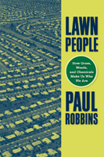

A comprehensive survey of the American lawn and how caring for it impacts people's lives
A comprehensive survey of the American lawn and how caring for it impacts people's lives


 A comprehensive survey of the American lawn and how caring for it impacts people's lives
A comprehensive survey of the American lawn and how caring for it impacts people's lives

|  |
Lawn PeopleHow Grasses, Weeds, and Chemicals Make Us Who We ArePaul Robbinspaper EAN: 978-1-59213-579-0 (ISBN: 159213579X) |
"Lawn People rips the suburban sward with the tools of critical social theory. Robbins disturbs comfortably rooted truths about the American lawn to plant a fresh idea: the lawn as a producer of cultural subjects, a political ecology of grasses, chemicals, neighbors and covenants that makes us who we are. Drawing on original data and engagingly written, Lawn People steps beyond the turfgrass to unthink this most cherished and problematic of spaces."
—Gavin Bridge, School of Environment and Development, University of Manchester
For some people, their lawn is a source of pride, and for others, caring for their lawn is a chore. Yet for an increasing number of people, turf care is a cause of ecological anxiety. In Lawn People, author Paul Robbins, asks, "How did the needs of the grass come to be my own?" In his goal to get a clearer picture of why people and grasses do what they do, Robbins interviews homeowners about their lawns, and uses national surveys, analysis from aerial photographs, and economic data to determine what people really feel about-and how they treat-their lawns.
Lawn People places the lawn in its ecological, economic, and social context. Robbins considers the attention we pay our turfgrass-the chemicals we use to grow lawns, the hazards of turf care to our urban ecology, and its potential impact on water quality and household health. He also shows how the ecology of cities creates certain kinds of citizens, deftly contrasting man's control of the lawn with the lawn's control of man.
Lawn People provides an intriguing examination of nature's influence on landscape management and on the ecosystem.
Excerpt available at www.temple.edu/tempress
"Writing in characteristically lucid and vibrant prose, Robbins turns common-sense assumptions on their head in terms of environmental practices, education, and class. Based on research stunning in its scope and complexity, he shows how a multiplicity of factors, from pesticide industry salespeople, to real estate values, to the needs of turfgrass monoculture itself act together in ways that encourage people to treat their lawns with chemicals despite what they know. In this book political ecology makes its overdue entry into American suburbia and is thus destined to be a classic of that field."
—Julie Guthman, Associate Professor in Community Studies, the University of California at Santa Cruz.
"This book is for all those who think that grass is just grass and lawns these pastoral green spaces you enjoy while barbecuing. It is also for those who seek to understand better how nature, the social and the cultural fuse together in something like the American lawn. Paul Robbins offers a razor-sharp analysis of how grass, people, pesticides and fertilizers fuse together to produce an iconic cultural landscape, one that tells us as much about ourselves as it does about the environments we inhabit. A great read and a must have for students and practitioners of planning, ecology, architecture, geography, landscape or the city."
—Erik Swyngedouw, Professor of Geography, University of Manchester
"Paul Robbins has written the definitive analysis of the taken-for-granted American lawn. Lawn People painstakingly documents the ecological, cultural, economic, and political dimensions of our obsession with perfect turf. A masterpiece of political ecology, Robbins' analysis ranges from the ecological characteristics of distinct grass species to the environmental beliefs of the middle class consumer. Informative, incisive, and accessible, this is a must-read book for planners, geographers, environmental scientists, and consumers alike.."
—Karen Bakker, Associate Professor, Geography, University of British Columbia
"This book on the influence of lawn cultivation in the United States might justly be subtitled ‘the tyranny of lawns.’ It dwells on the influence of lawn care on American society, describing how a large segment of the population appears driven to create the ‘perfect’ lawn. This perfection affects decisions that ultimately influence the economy, politics, and the environment. Author Paul Robbins examines the subject in a very searching text that stresses ‘the tension between our many contradictory desires.’"
—Current Books on Gardening and Botany
"How can we rethink American lawns? And in doing so, how might we begin to remake ourselves? These are the political questions motivating Paul Robbins’s concise and empirically rich Lawn People…. Conceptually, Robbins applies the familiar tools of political ecology to the fresh topic of the suburban middle classes….This book clearly demonstrates that new conceptual approaches using metaphors of networks, associations, and relations can be strongly critical and libratory."
—Environment and Planning A
"This interesting, insightful, and well-written volume provides a look into the complex ecological, economic, political, and sociological relationships of homeowners, their communities, the lawn care industry, pesticide and fertilizer manufacturers, and turf grasses to exhibit the ecological Gordian knot of a landscape phenomenon that insists on battling the natural processes of biodiversity and succession. Robbins’s work strives to explain why so much US land and why so many people fall victim and are enslaved by an ostensibly powerless, weak, and vulnerable organism (grass), and what their relationship says about Americans and their fundamental relationship with nature. Summing Up: Highly Recommended."
—Choice
"I would like the book to be read by every environmentalist who believes that simply educating people to ecological dangers is strategically sufficient for environmental improvement. Disciplinarily, the book represents political ecology’s long overdue entry into American suburbia and is destined to be a classic of the field. The book draws on a multiple method study, stunning in its scope and complexity….I recommend the book highly."
—The Professional Geographer
"[Robbins] offers a clever exploration of the political ecology and actor network theory, and a sharp insight into the cynicism of capitalism in the form of the chemical industry. That is a lot for a slim, nicely illustrated and well-written book to achieve, but it does it with style and intelligence…. [T]he book is readable and wide-ranging in its arguments…its analysis is relevant wherever suburban values extend…. This book should be widely read and discussed."
—Environmental Conservation
"Robbins illuminates this relation of [lawn and man] mutual production brilliantly through detailed historical, ethnographic, and survey research. Robbins dispels many myths about lawns held in both popular and scholarly circles.... Lawn People is first-rate scholarship, engaging, accessible, theoretically rich, and well grounded. It has had a powerful effect on my thinking about society-environment interfaces and the future direction of the social sciences on this topic."
—The American Journal of Sociology
"Robbins' Lawn People is analytical in every sense, using the theoretical and methodological approaches of the social sciences to find concrete explanations for how people choose to engage in the culture of the lawn.... [It is] essential if you want to understand the American lawn in all of its complexity. Read [it] —you'll still have time to cut the grass."
—The Geographical Review
Introduction
Chapter 1 : Explaining Lawn People
" A Profile of Lawn People
" Interrogating Assumptions in Apolitical Economy
" The Mutual Tyrannies of Urban Political Ecology
Chapter 2 : Is the Lawn an Expression of American Culture?
" The Manor House Tradition: Labor, Land and Grass
" Ecological Imperialism and American Turf
" The American Law Tradition
" Democratic Landscape? The Spread of the Modern Lawn
" Lawn Culture for Lawn Subjects
Chapter 3 : Does the Lawn Necessarily Require Inputs?
" What is Turfgrass and How Does it Grow?
" Turfgrass Structure and Growth
" Why Lawns Need So Much Care?
" The Lawn's needs become those of the Turfgrass Subject
Chapter 4 : Are Lawn Inputs a Hazzard?
" The Dawn and Maturing of Lawn Chemistry
" The Contemporary Chemical Suite
" Lawn Risks Defy Regulation
Chapter 5 : Does the Industry Meet or Produce Demand?
" Demand or Supply?
" The Lawn Commodity Chain
" Producers: Searching for Buyers
" Applicators: Tending the Weed Business
Chapter 6 : Do Lawn People Choose Lawns?
" Chemical Communities
" The Lawns of Kingberry Court
" Risk Citizens, Contradiction Reconcilers, Networked Actors
Chapter 7 : Can Lawn People Choose Alternatives?
" Landscape Alternatives
" Elusiveness of Alternatives
" Are Lawn Alternatives really Alternative?
Chapter 8 : Becoming Turfgrass Subjects
" Anxiety, Objects, Subjects and Political Economy
" Epilogue: Rescuing the Environment from Determinism
Appendix A: Suggestion and Sources for Lawn Alternatives
" Some General Rules
" Resources and Allies
Appendix B: Data Development and Analysis
" The National Homeowner Survey
" The Applicator Survey
" The Kingberry Court Interviews
" The Land Cover Survey
" Current Published Resources
 | Paul Robbins is a Professor in the Department of Geography and Regional Development at the University of Arizona. He is the author of Political Ecology: A Critical Introduction. |
Nature and the Environment
Urban Studies
© 2015 Temple University. All Rights Reserved. This page: http://www.temple.edu/tempress/titles/1884_reg.html.